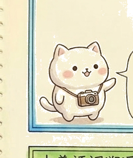

每天學一點，15 個字我都會！
① 聽發音並跟讀 → ② 看圖記字 → ③ 讀語詞 → ④ 試一題
準備好耳機、紙和筆；每學完一個字，就用手寫一遍。

進度保存在這個瀏覽器
🎉 15 個字都完成了！
挑三個字，在紙上各寫一個語詞，再念給同學聽。也可以點選上方生字重新練習。
使用小幫手／共用平板換人
沒有聲音？先確認裝置音量、耳機連接，再點一次朗讀。點選圖片可以放大；按 Esc 或「關閉」返回。
電腦可用左右方向鍵切換生字；Tab 選按鈕、Enter 操作。
共用平板換學生時，請清除上一位的學習紀錄。